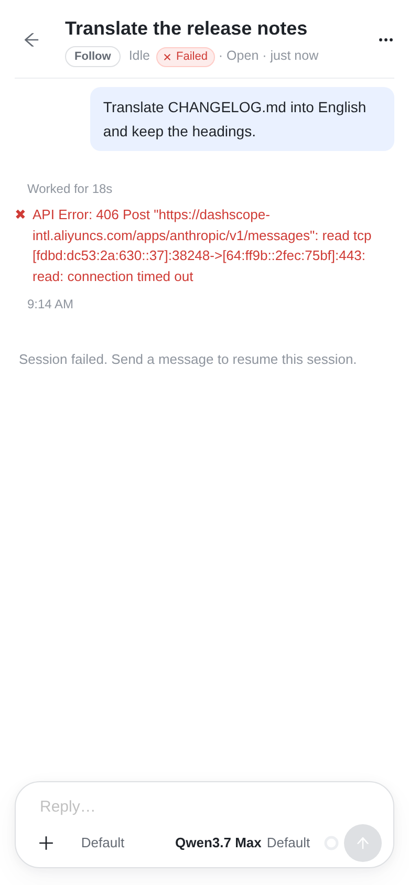
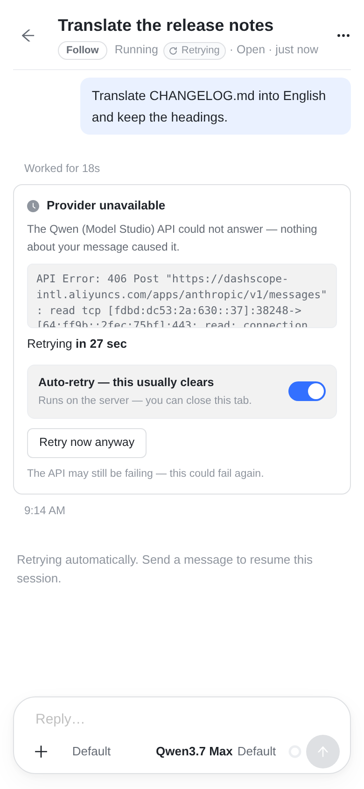
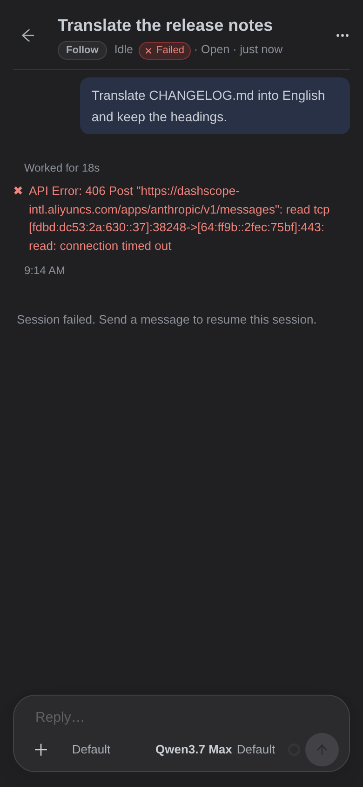

手机宽度（390pt）· 今天 vs 改后 · 浅色 / 深色




macOS / iOS / Android 的判定词表同步加了这一条（EngineErrors 三端 + runner），卡片是各端已有的同一张。
真实 web 构建截图，同一会话、同一事件、同一时钟（Asia/Shanghai 11-13 09:14）。左 = main 1668e157f3，右 = 本分支 b3365aceba。不新造外观：右边是已有的「Provider unavailable」卡片。
406 被当成「请求本身的问题」，不在可重试状态码里 → 只画一行红字，回合就此结束，要你手动重发。read tcp …: read: connection timed out）。现在 read: connection timed out 与 ECONNRESET 同归「连接失败」，优先于状态码 → 走已有的自动重试卡片，原始报错原样保留在灰框里。


macOS / iOS / Android 的判定词表同步加了这一条（EngineErrors 三端 + runner），卡片是各端已有的同一张。
「The qwen API」→「The Qwen (Model Studio) API could not answer…」；自家登录的引擎写 CLI 名（「The Claude Code API」，原来是「The claude API」）。额度卡同理（「The 5-hour quota for Claude Code…」）。三端各用 composer 已有的同一个取名函数：web providerNameOn、Apple SessionProviderChoices.providerName(on:)、Android catalog.providerName。图 ①② 已是改后实拍。
| 服务端写的 | status/runState FAILED · released: true（回合结束、runner 名额已还）· phase RUNNING（原为 IDLE，迁移 1667）· lastTurnOutcome FAILED · waitingOn WAKE · retryAt = 30 秒后（第一档），retryAttempts 0。 |
| 界面读成 | 「Running · ↻ Retrying」：三端状态词直接读 phase，Retrying 标记照旧（released 失败 + WAKE）。列表归 Working，不进 Needs you；底部「Retrying automatically.」替换掉「Session failed.」。run state 仍是 FAILED：没有 Stop，发消息走 resume，不会当成插话塞进不存在的回合。 |
| 之后 | 到点 AutoRetryService 认领（清 retryAt、次数 +1）并重发 → RUNNING。三次都失败（30 秒 / 2 分 / 5 分）就清掉 retryAt：变回普通 FAILED，进 Needs you，卡片「Auto-retry gave up」。retryAt 过期 2 分钟没人来认领，也自动回落成 FAILED，不会一直挂着「Retrying」。 |
| 没变的 | 只管已 released 的失败重试。停在 AWAITING_INPUT 的额度重试（held + retryAt）仍是 Idle：held 行读 RUNNING 会被三端当成回合在跑。watch / session_await / 侧栏计数不读 phase，行为不变；分享页仍按等待节奏轮询。 |
| 你插手 | 这期间直接发消息 = 正常续上，armed 的重试被你的消息顶掉，不会重复发。 |
| 已提交 | 23a7b838b2 判定：CONNECTION_TIMED_OUT_MARKERS = ['read: connection timed out']，shared / runner-go / Android / Swift。b3365aceba 显示名：web / macOS·iOS / Android 卡片调用处各一行。42bf9e7857 等待重试 = RUNNING：deriveSessionPhase + 迁移 1667（trigger 加 retry_at、回填只写 phase）+ 契约文字 + census/backfill 脚本。 |
| 已验证 | shared vitest 58；runner Go 失败分类；Android AutoRetry* + EngineErrors*；web WorkspaceView.retryMessage + Transcript 158、会话显示 153 通过；apiserver session-phase 单测；真 PostgreSQL 16 上 session-turn-state-phase.pg.spec 5/5（每种形状 set/clear retry_at）。纯 API Error: 406 Not Acceptable 仍不重试。 |
| 未验证 | macOS/iOS 的 Swift 编译与测试（只能在 Mac mini 上跑）。 |
| 部署前 | 遇到这条手动发「continue」；频繁出现说明 dashscope-intl 端点本身不稳，可换北京端点 dashscope.aliyuncs.com。 |